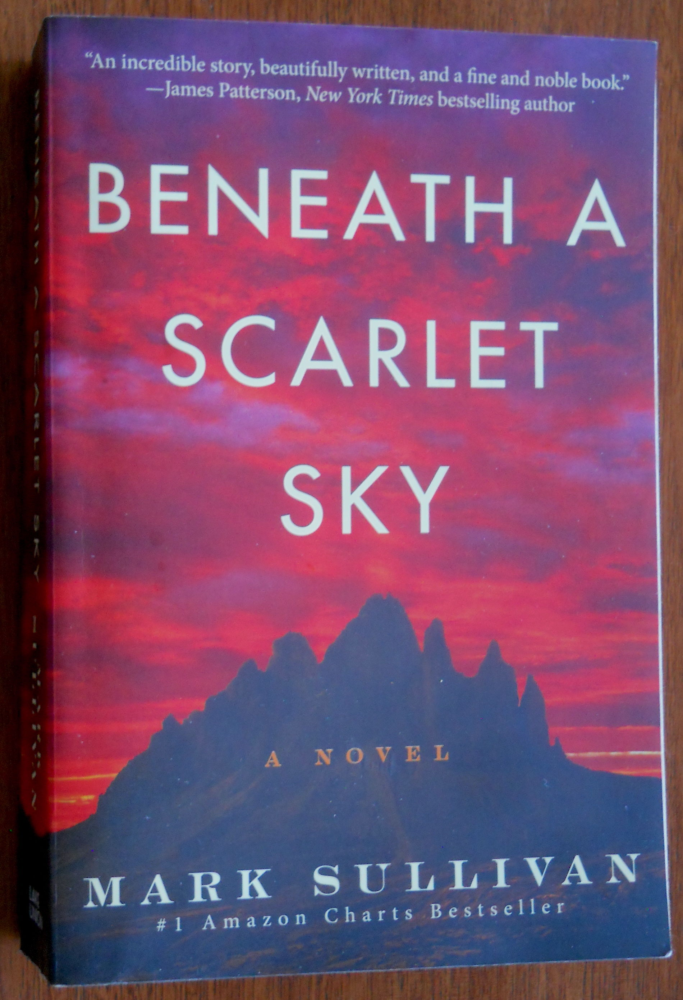

James Abreus
Hello Software Engineering
Things I find interesting
Computer Hardware
History
Tanks
Astronomy
I like History, I enjoyed learning about general's and there tactics especially in WW II. Such generals included George S. Patton &
Erwin Rommel (The Desert Fox) along side with heros such as Franz Stigler & Guiseppe Lella (Pino). I find there success and stories very intruging considering how often they had to think outside the box to solve their problems. I also enjoy
adding and removing hardware from computers to gain a better understanding of new and unique parts. I personally built my computer a handful of times for new parts Via word of mouth and youtube.
Greek Mythology was always interesting to me and all the stories that came with it. Science has also
caught my eye with Physics and Anatomy being very intricate.
This book is a culmination of what I wrote above, it has heros and history of a painful time. This is something I think we should take notes in and not forget the past.
